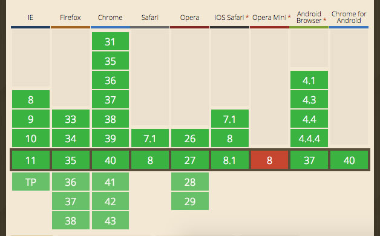
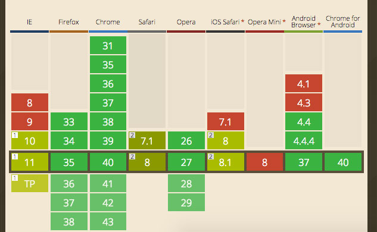
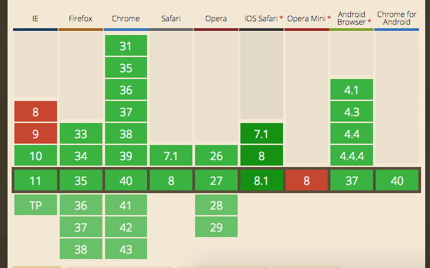
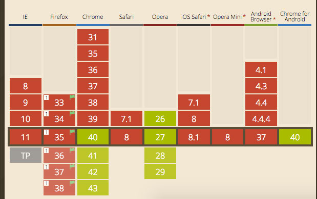

Offline-first
Building Offline-First Web Apps
by Diego Calderón / @codekult
Why Offline-first?
Offline needs UX ❤ Love
Christian Heilmann. The next UX challenge on the web
- Handling conflicts between different content versions.
- Reempting user's needs.
- Displaying chronological data updates.
- … just to name a few.
We need to think about the advantages and problems of this approach and set a few things to focus on, in order to create a better user experience.
Offline is not an error
Treat network as an enhancement
Build security and close the gap beetwen native an web apps
save vs sync. Offline-first advantages
The tools we need to know
Web storage
localStorage and sessionStorage are both instances of the Storage object, and function in a similar way, saving data based on named key/value pairs.
localStorage persists when the browser is closed and reopened, in turn sessionStorage endures for the duration of the page session.
Set data:
localStorage.setItem('color','beige');
Get data:
localStorage.getItem('color');
Remove/clear data:
localStorage.removeItem('color');
localStorage.clear(); // Clear all
All the data in web storage is saved as strings
We can work around this using JSON.stringify() and JSON.parse() methods for objects:
localStorage.setItem('myObj', JSON.stringify(myObj));
JSON.parse(localStorage.getItem('myObj'));
Or coerce the data into the expected JavaScript datatype:
var qty = parseInt(localStorage.getItem('qty'));
We can track when storage area changes using the storage event, which is fired on window object whenever setItem(), removeItem(), or clear() is called and actually changes something.
StorageEvent object
key: The changed key.oldValue: Previous value (now overwritten), or `null` if a new item was added.newValue: New value, or `null if an item was removed.url: The page which called a method that triggered this change.
IndexedDB
IndexedDB is a transactional, object-oriented and noSQL database hosted and persisted in the browser.
First, some preliminal concepts:
Database
Each database has a name and a current version, which starts at 1 but can be specified.
A database can have only version at a given time and we can change it by open the database with a greater number version.
This will start a versionchange transaction and fire an upgradeneeded event, and its handler is the only place where the schema of the database can be updated.
A database is composed of one or more:
Object store
The mechanism by which data is stored in the database. Holds key-value pair records. Those records are sorted according to the keys in an ascending order.
Must have an unique name within the database and can have a key generator, a key path, both, or none of them.
Transaction
This is how we interact with the data in a database, everything we change happens in the context of a transaction.
There are three modes of transactions: readWrite, readOnly and versionChange.
A database connection can have multiple transactions at a a time, so long as the transactions don't have overlapping scopes.
Open a database:
var db,
request = indexedDB.open("frontendDatabase");
request.onerror = function (event) {
alert("Error");
};
request.onsuccess = function (event) {
db = event.target.result;
};
This will return an special type of request (IDBOpenDBRequest) with an error, or a database as result if success.
If the database doesn't exists or if the database exists but and greater version number is specified, an onupgradeneeded event is fired. We can create the schema for the new database or update the existent one in the onupgradeneeded event handler.
Create/update the schema of a database:
request.onupgradeneeded = function (event) {
var db = event.target.result;
// Create an objectStore for this database
var objectStore = db.createObjectStore("devs", { keyPath: "dni" });
};
Creating an objectStore with a key generator:
var objectStore = db.createObjectStore("devs", { autoIncrement : true });
Created Object stores persist through versions. Here we can create new object stores, delete unnecesary ones, or change an existing object store (deleting the old and creating a new one, saving the necessary data).
If the onupgradeneeded event exits successfully, the onsuccess handler of the open database request will be triggered.
Add/remove/update values in an object store
Open a transaction:
var transaction = db.transaction(["devs"], "readwrite");
Transactions can receive DOM events of three different types:error, abort, and complete.
transaction.oncomplete = function (event) {
alert("Done!");
};
transaction.onerror = function (event) {
// Handle errors
};
var objectStore = transaction.objectStore("devs");
for (var i in devData) {
var request = objectStore.add(devData[i]);
request.onsuccess = function (event) {
// event.target.result == devData[i].dni;
};
}
Methods to manipulate data in object stores are:add(), clear(), delete(), get(), and put().
Shorthand example:
db.transaction("devs")
.objectStore("devs")
.get("33222111")
.onsuccess = function (event) {
alert("Name for DNI 33222111 is " + event.target.result.name);
};
Indexes and cursors
An index is a specialized object store for looking up records in another object store, called the referenced object store.
var objectStore = db.createObjectStore("devs", { keyPath: "dni" }),
// Create an index to search devs by name. We may have duplicates
// so we can't use a unique index.
index = objectStore.createIndex("name", "name", { unique: false });
index.get("Alex").onsuccess = function (event) {
alert("Alex's DNI is " + event.target.result.dni);
};
A cursor is a mechanism for iterating over multiple records,
with an optional key range.
var devs = [];
objectStore.openCursor().onsuccess = function(event) {
var cursor = event.target.result;
if (cursor) {
devs(cursor.value);
cursor.continue();
} else {
alert("All devs: " + devs);
}
};
We can build a key range with:only(), upperBound(), lowerBound(), bound().
Bounds methods accept a boolean parameter to specify is the bounds is included in the cursor (`false` include and `true` doesn't). Example:
var keyRangeExample = IDBKeyRange.bound("33222111", "34333222", true, true);
AppCache
Allows a developer to specify which files the browser should cache and make available to offline users.
To enable the application cache for an app, include the manifest attribute on the document's html tag:
manifest="example.appcache"
The manifest attribute should be included on every page of your web application that you want cached.
A manifest file must be served with the mime-type text/cache-manifest in order to to work in older browsers and IE11.
You may need to add a custom file type to your web server or .htaccess configuration.
A simple manifest looks something like this:
CACHE MANIFEST
index.html
stylesheet.css
images/logo.png
scripts/main.js
http://cdn.example.com/scripts/main.js
And a more complex example:
CACHE MANIFEST
# 2010-06-18:v2
# Explicitly cached 'master entries'.
CACHE:
/favicon.ico
index.html
stylesheet.css
images/logo.png
scripts/main.js
# Resources that require the user to be online.
NETWORK:
*
# static.html will be served if main.py is inaccessible
# offline.jpg will be served in place of all images in images/large/
# offline.html will be served in place of all other .html files
FALLBACK:
/main.py /static.html
images/large/ images/offline.jpg
A manifest can have three distinct sections:
CACHE:
This is the default section for entries. Files listed under this header (or immediately after the CACHE MANIFEST) will be explicitly cached after they're downloaded for the first time.
NETWORK:
Files listed in this section may come from the network if they aren't in the cache, otherwise the network isn't used, even if the user is online. You can white-list specific URLs here, or simply *, which allows all URLs. Most sites need *.
FALLBACK:
An optional section specifying fallback pages if a resource is inaccessible. The first URI is the resource, the second is the fallback used if the network request fails or errors. Both URIs must from the same origin as the manifest file. You can capture specific URLs but also URL prefixes. images/large/ will capture failures from URLs such as images/large/whatever/img.jpg.
Updating the cache
Once an application is offline it remains cached until one of the following happens:
- The user clears their browser's data storage for your site.
- The manifest file is modified. Note: updating a file listed in the manifest doesn't mean the browser will re-cache that resource. The manifest file itself must be altered.
Wasn't AppCache a douchebag?
Jake Archibald. Application Cache is a Douchebag

Gotchas:
- Files always come from the appcache, even online.
- The appcache ony updates if the manifest content has changed.
- Appcache is an additional cache, not altenative one.
- Non cached resources will not load on a cached page.
- and many more.
Yes, but a useful one.
Especially for SPAs.

ServiceWorker
Service Worker is a kind of Web Worker. It runs in the browser's background, separate from the web page and has the ability to intercept and handle network requests, including programmatically managing a cache of responses.
It cannot access the DOM. Instead, it will use postMessage to communicate with the pages and make extensive use of promises.
But this is subject of another talk ¯\_(ツ)_/¯
And more
FileSystem API, push notifications, backgroundSync;
and third-parties tools: Hoodie, PouchDB, and so on…
Use cases for each tool
What to store, how and where
The apps and its assets
Appcache and Service Worker
The app's data
Web storage, IndexedDB. Or something like PouchDB or Hoodie.
Web storage
IndexedDB
Appcache
Service workers
An offline-first example
Examples:
Further reading:
Questions?
Thanks!